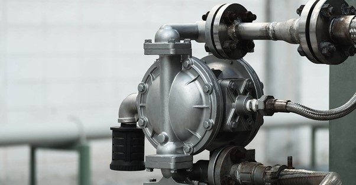
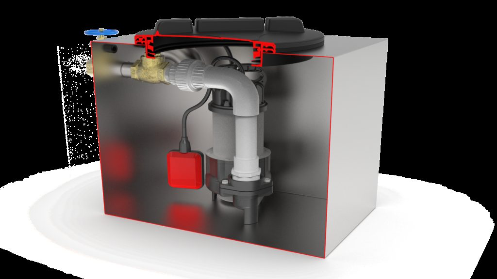
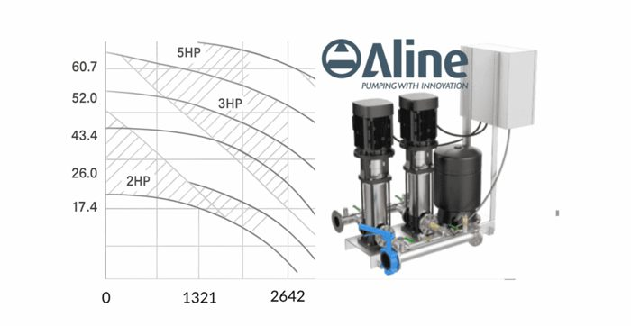
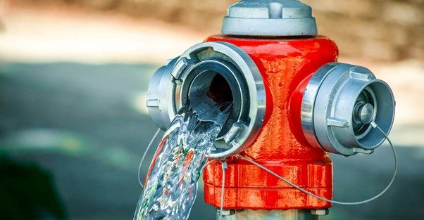
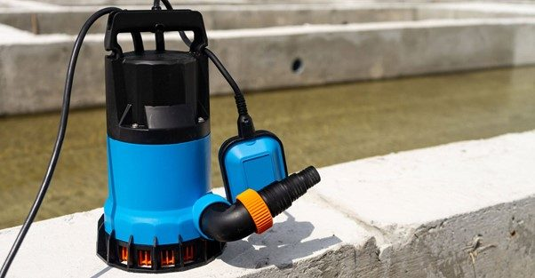
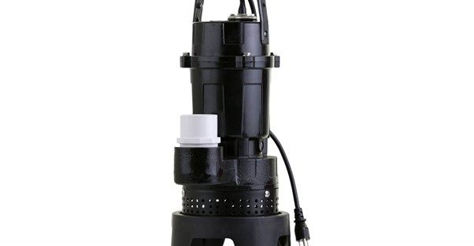
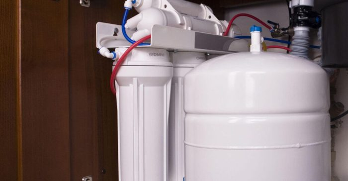

High-flow or High-pressure, what is the difference?
A high pressure water pump is designed to generate strong, focused water force, ideal for tasks like cleaning, firefighting, irrigation…
Learn moreThe Kwikflo pump station is an automatic system specifically designed for handling sink and basin waste where gravity drainage to the sewer is not feasible. It is ideal for commercial and industrial applications, including grease trap installations.
This pump station is equipped with a compact electric submersible pump and comes pre-plumbed for quick and easy installation. Wastewater enters the pump station, triggering the float switch as the water level rises, which then activates the pump. The system efficiently pumps the waste upwards, reducing the water level and deactivating the pump once the waste is cleared. Additionally, it supports both freestanding and guide rail installations and includes features like electrical conduit connections, making it a versatile and robust choice for diverse commercial applications.

3 products
Pump stations are integral to efficiently managing wastewater and sewage in various commercial and residential settings. They are especially crucial in environments such as cafes, bakeries, and takeaways where they handle high volumes of grease and wastewater. Laboratories and laundries also rely on pump stations for the safe disposal of potentially contaminated water.
Additionally, these systems are vital in residential areas like basements and granny flats to prevent flooding and maintain proper sanitation. Bars and cellars benefit from their ability to manage excess water and maintain dry conditions, while kitchens use pump stations to ensure that waste water is efficiently removed, keeping the area clean and compliant with health regulations.

A high pressure water pump is designed to generate strong, focused water force, ideal for tasks like cleaning, firefighting, irrigation…
Learn more
What Is a Pump Performance Curve? A pump performance curve is a graph that shows how a pump will…
Learn more
Aline Pumps Blue Book Complete Product Guide Australia. Aline Pumps proudly serves the Australian plumbing, building and fire industries…
Learn more
Australia’s Innovation of the Submersible Pump Over The Years. As Australia’s preferred pump supplier, Aline Pumps celebrates innovation in…
Learn more
Aline Pumps provides Australia’s best selection of all purpose pumps, with a sump pump range trusted by builders, plumbers…
Learn more
Under sink pump stations are devices used to move wastewater, where gravity does not assist in moving the water…
Learn moreContact our team to confirm the best fit for your application.
Contact usAn undersink pump station is a compact, self-contained unit that sits under a sink or bench and lifts wastewater from a single point, such as a kitchen sink, hand basin or dishwasher, where it can't drain to the sewer by gravity. Kwikflo undersink models hold 40 to 80 litres (KUS40, KUS80 and KUSP40) and come pre-plumbed for quick installation.
A pump station is a larger tank, usually installed below ground or as a freestanding chamber, that collects wastewater, sewage or stormwater from several fixtures or a whole building and pumps it to the sewer or stormwater system. Aline's Kwikflo pump stations range from 100L to 5000L. If you're draining one or two fixtures in a confined space, an undersink unit is usually the right fit; for bathrooms, basements or multiple outlets, you'll need a pump station.
The ideal size of a pump station depends on the volume of wastewater, peak flow rates, and the height it needs to be lifted (known as head height). For undersink applications, common considerations include the number of fixtures connected (e.g. sinks, dishwashers) and whether it's used in a residential or commercial setting. Aline Pumps offers a range of capacities from 100L to 5000L to meet varying requirements. Contact our team to confirm the best fit for your application.
In a wet well pump station, the pumps are submerged directly in the wastewater, making it a simpler and more cost-effective option for small-scale applications like undersink systems. In contrast, a dry well configuration houses the pumps in a separate, dry chamber beside the wet well, making them easier to service but more expensive to install. For compact, below-bench or confined-area uses, wet well systems are generally the preferred choice.
From design to commissioning, Aline Pumps provides end-to-end support for Australia's most iconic infrastructure. Discuss your project requirements with us on 1800 018 999 or send us an enquiry.